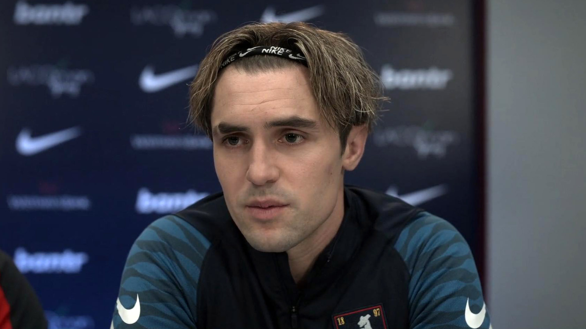

"Believe" и "This is Anfield"
В сериале "Ted Lasso", табличка "Believe" является ключевым символом, который отражает позитивный и оптимистический подход главного героя, Теда Лассо, к тренерской работе и жизни в целом.
С самого начала сериала, когда Тед становится главным тренером футбольного клуба "AFC Richmond", он приносит с собой табличку со словом "Believe" и вешает ее над дверью в раздевалке. Эта табличка служит постоянным напоминанием игрокам о вере в себя, в команду и в позитивные исходы, даже в самых тяжелых моментах.
Табличка становится символом оптимизма и упорства Теда, его уверенности в том, что позитивное отношение может преобразить команду и помочь ей достигнуть успеха. В различных моментах шоу табличка "Believe" играет ключевую роль, напоминая зрителям о важности веры и уверенности в себе.
Таким образом, хотя это всего лишь маленькая табличка, она стоит в центре философии Теда Лассо и служит важным элементом нарратива в сериале.
"This is Anfield" - это известная табличка, которая висит в игровом тоннеле на стадионе "Анфилд", домашней арене футбольного клуба "Ливерпуль". Она была установлена в 1974 году менеджером команды Биллом Шенкли, чтобы напугать соперников и вдохновить своих игроков перед выходом на поле.
Шенкли сказал своим игрокам: "Это привилегия играть на этом стадионе и для этих болельщиков. Когда вы касаетесь этой таблички, помните об этом". С тех пор это стало традицией для игроков "Ливерпуля" касаться таблички перед каждым домашним матчем.
Табличка "This is Anfield" стала символом гордости, традиций и истории "Ливерпуля". Она напоминает соперникам о сложности игры на "Анфилде" перед самыми страстными и преданными болельщиками в мире.
В реальном футбольном мире, также как и в нашем сериале, некоторые игроки действительно носили защитные маски или головные уборы по разным причинам.
Петр Чех начал носить специальный головной убор после травмы головы, полученной в матче в 2006 году. Эта травма могла угрожать его карьере и жизни, и с тех пор он играл в защитном головном уборе.
Пьер-Эмерик Обамеянг одевал защитную маску после перелома носа во время матча.
В "Тедд Лассо" использование маски игроком могло быть данью уважения этим реальным ситуациям, подчеркивая реалистичность сценария и углубляя связь с реальным футболом. Как и в реальной жизни, такие моменты в сериале могли быть использованы для демонстрации смелости, решимости и профессионализма футболистов, готовых играть и жертвовать собой ради команды даже после серьезных травм.
В маске на последней фотографии он не играл, только лишь праздновал один из забитых голов.
Защитные маски в футболе

Cхожей чертой между Джеком Грилишем и Джейми Тартом является их прическа. Оба спортсмена отдают предпочтение длинным волосам, убранным назад.
Грилиш славится своим характерным образом: длинные волосы, убранные назад, стали частью его бренда и часто обсуждаются в СМИ и среди болельщиков. Этот стиль прически дополняет его игровой и внеигровой образ, подчеркивая индивидуальность и уверенность в себе.
Джейми Тарт в "Тед Лассо" также демонстрирует подобный стиль прически, что, возможно, является дополнительной ассоциацией с реальными звездами футбола вроде Грилиша. Этот стиль стал своего рода символом молодой и уверенной звезды, желающей выделиться и показать свою уникальность.
Таким образом, сходство их причесок подчеркивает общие черты характера и поведения двух футболистов: желание выделяться, быть в центре внимания и демонстрировать свою уникальность.
Jamie Tartt и Jack Grealish
Zava и Ibrahimovich
Внешний вид
Татуировки: Ибрагимович известен своими многочисленными татуировками, которые рассказывают историю его жизни, веры и футбольной карьеры. Хотя Зава может не иметь такого же количества тату, стиль и размещение некоторых из них могут напоминать те, что есть у шведского нападающего.
Физическая форма: Ибрагимович и Зава — высокие и крепкие футболисты, что придает им определенное преимущество на поле, особенно в воздушных единоборствах и при приеме мяча.
Характер
Самоуверенность и убежденность в своем таланте: Ибрагимович известен своими бравадозными заявлениями и уверенностью в себе. Он часто подчеркивает свою уникальность и неповторимость на футбольном поле. Зава в "Тед Лассо" проявляет схожую уверенность в своих способностях, часто ставя себя выше других.
Харизма: Оба футболиста обладают ярко выраженной харизмой, которая привлекает к ним внимание и делает их фигурами, окруженными множеством дискуссий.